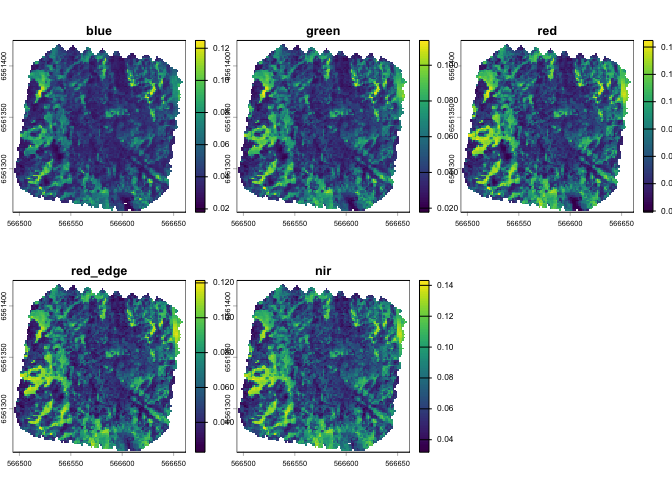
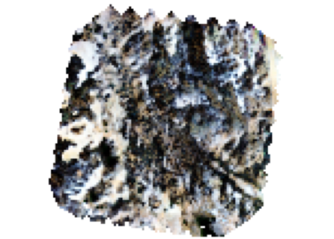

saltbush processes drone imagery to calculate spectral diversity values as part of the assessment of the ‘spectral variability hypothesis’ or the ‘spectral-biodiversity relationship’. This was specifically implemented to connect from-the-sky diversity with on-the-ground diversity as measured in the AusPlots project. There are also functions to calculate on-the-ground diversity built on the ausplotsR and vegan packages. The statistical methods for connecting diversity sampled on the ground to diversity sampled from the sky are implemented and tested here. This package is aimed at making from-the-sky diversity methods development easier for researchers across the world.
Specifically we have used this package in a test in the Australian arid zone. The results suggest that some of the methods below perform much better than others. The code that reproduces that full analysis is available at adelegem/multispectral_drone_svh.
Installation
install.packages("remotes")
remotes::install_github("traitecoevo/saltbush", build_vignettes = TRUE)A quick taste
saltbush ships with a small synthetic dataset and a cached AusPlots query so you can try the on-the-ground side without any external data:
field_diversity <- calculate_field_diversity(ausplots_NSABHC0009)
field_diversity$taxonomic_diversity
#> site_unique site_location_name species_richness shannon_diversity
#> 1 NSABHC0009-58026 NSABHC0009 52 3.056908
#> 2 NSABHC0009-53604 NSABHC0009 38 2.843074
#> simpson_diversity pielou_evenness exp_shannon inv_simpson
#> 1 0.9203249 0.7736571 21.26171 12.55097
#> 2 0.9043699 0.7815826 17.16846 10.45696For the from-the-sky side, the package bundles a small clip of multispectral drone imagery from Fowlers Gap, NSW that you can turn into spectral metrics:
raster_files <- list.files(
system.file("extdata/example", package = "saltbush"),
pattern = "\\.tif$", full.names = TRUE
)
aoi_files <- list.files(
system.file("extdata/aoi", package = "saltbush"),
pattern = "NSABHC0009_aoi\\.shp$", full.names = TRUE
)
pixel_values <- extract_pixel_values(
raster_files, aoi_files,
c("blue", "green", "red", "red_edge", "nir")
)
metrics <- calculate_spectral_metrics(
pixel_values,
wavelengths = c("blue", "green", "red", "red_edge", "nir"),
masked = FALSE, rarefaction = FALSE
)The five spectral bands of that clip:

A true-colour composite of the same clip:
terra::plotRGB(drone, r = 3, g = 2, b = 1, stretch = "hist")
The spectral metrics for the area of interest:
metrics
#> site aoi_id CV SV CHV image_type
#> <char> <num> <num> <num> <num> <char>
#> 1: NSABHC0009 1 0.334488 0.001761305 3.347609e-10 unmaskedWorked example
For a full walkthrough — multiband-image construction, AOI extraction, spectral metrics, AusPlots point-intercept diversity, and how the two halves fit together — see the package vignette:
vignette("saltbush")Diversity metrics computed
Spectral diversity (from drone imagery):
- coefficient of variance (CV)
- spectral variance (SV)
- convex hull volume (CHV)
Taxonomic diversity (from point-intercept survey data):
- species richness
- Shannon’s diversity index
- Simpson’s diversity index
- Pielou’s evenness
- exponential Shannon’s index
- inverse Simpson’s index
Comparing from-the-sky and from-the-ground diversity
High-resolution drone images are very large, and the example data included with the package on GitHub are too small to do this meaningfully. We recommend running the workflow locally on your own imagery following the steps in vignette("saltbush"). For a complete, real-world analysis built on saltbush, see the companion repository adelegem/multispectral_drone_svh.